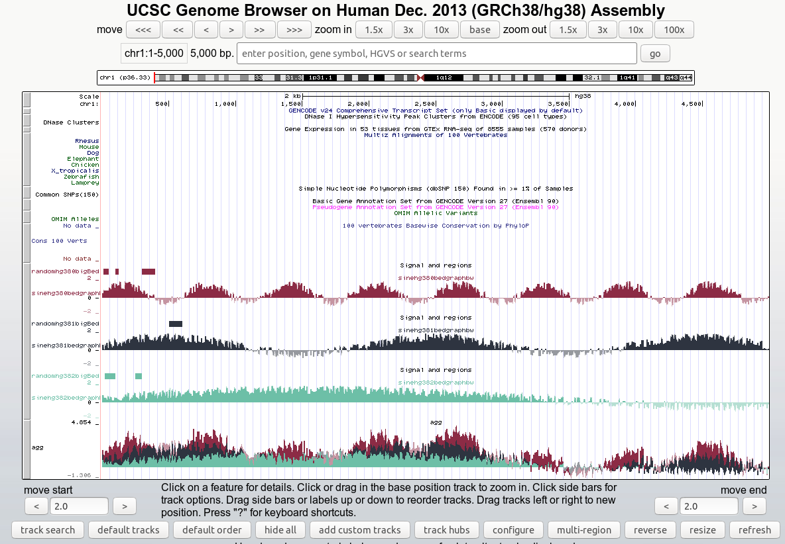
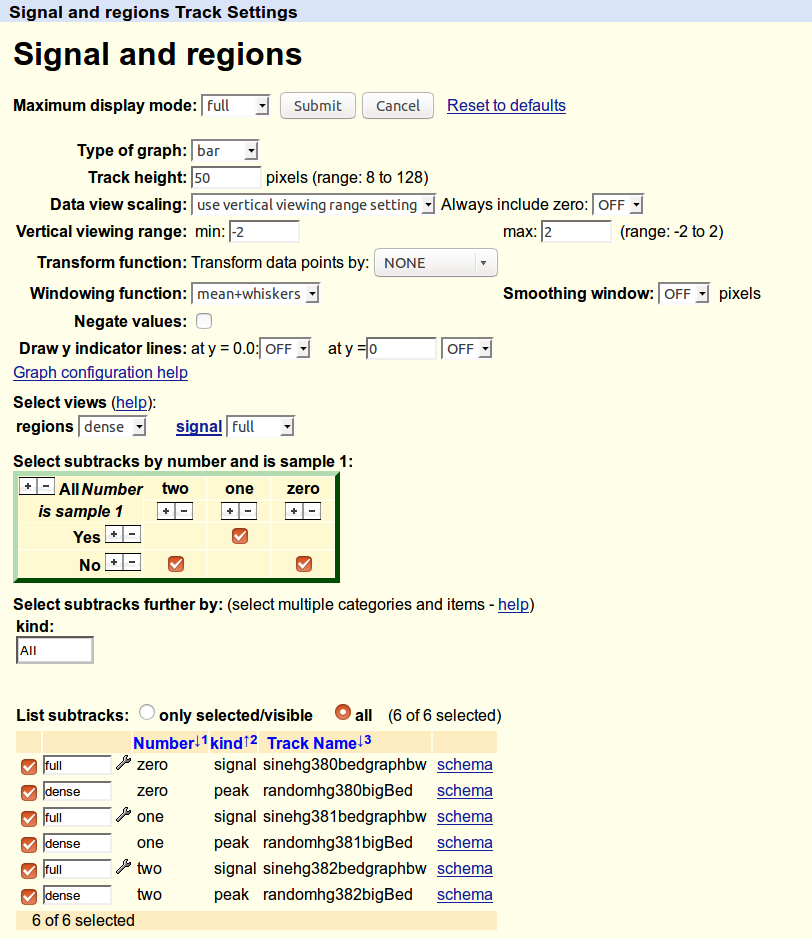

Organizing larger track hubs¶
This is a modified version of the example in the README which shows how to organize the data into multiple kinds of containers – multiWig, compositeTracks, and superTracks. See UCSC’s grouping quick start for some background.
Access the config page for the composite track to view the checkbox matrix and see other config options. Here are some screenshots:

{kind=link}
Screenshot of the hub generated from Organizing larger track hubs

{kind=link}
Screenshot of the configuration page generated by Organizing larger track hubs
import glob, os
import trackhub
# Initialize the components of a track hub, already connected together
hub, genomes_file, genome, trackdb = trackhub.default_hub(
hub_name="grouping",
short_label='example grouping hub',
long_label='example grouping hub',
genome="hg38",
email="dalerr@niddk.nih.gov")
# Subgroups provide a way of tagging tracks. If you give the same tag to
# a bigwig and a bigbed, you can use that tag to select them both. This is
# useful for, e.g., ChIP-seq tracks where the tag is "sample" or
# "antibody", and you can select both the signal and the called peaks at
# the same time.
#
# Here we're making some contrived subgroups just to illustrate their use.
subgroups = [
# A subgroup to select the replicate number
trackhub.SubGroupDefinition(
name='num',
label='Number',
mapping={
'0': 'zero',
'1': 'one',
'2': 'two',
}
),
# A contrived subgroup that will only tag it as "yes" if it's sample 1.
trackhub.SubGroupDefinition(
name='s1',
label='is_sample_1',
mapping={
'y': 'Yes',
'n': 'No',
}
),
# While the two different views we create below are a good way of
# turning on/off the signal or regions in bulk, this subgroup allows us
# to sort the tracks by "name" and then by "kind". This is helpful for
# ChIP-seq experiments where you want to have peaks under the
# corresponding signal.
trackhub.SubGroupDefinition(
name='kind',
label='kind',
mapping={
'signal': 'signal',
'peak': 'peak',
}
),
]
# Create the composite track
composite = trackhub.CompositeTrack(
name='composite',
short_label='Signal and regions',
# The available options for dimensions are the `name` attributes of
# each subgroup. Start with dimX and dimY (which become axes of the
# checkbox matrix to select tracks), and then dimA, dimB, etc.
dimensions='dimX=num dimY=s1 dimA=kind',
# This enables a drop-down box under the checkbox matrix that lets us
# select whatever dimA is (here, "kind").
filterComposite='dimA',
# The availalbe options here are the `name` attributes of each subgroup.
sortOrder='num=+ kind=-',
tracktype='bigWig',
visibility='full',
)
# Add those subgroups to the composite track
composite.add_subgroups(subgroups)
# Add the composite track to the trackDb
trackdb.add_tracks(composite)
# CompositeTracks compose different ViewTracks. We'll make one ViewTrack
# for signal, and one for bigBed regions.
signal_view = trackhub.ViewTrack(
name='signalviewtrack',
view='signal',
visibility='full',
tracktype='bigWig',
short_label='Signal')
regions_view = trackhub.ViewTrack(
name='regionsviewtrack',
view='regions',
visibility='dense',
tracktype='bigWig',
short_label='Regions')
# These need to be added to the composite.
composite.add_view(signal_view)
composite.add_view(regions_view)
# Next we will build a multiWig overlay track which will show an example of
# the signal as multiple bigWigs overlaying each other.
overlay = trackhub.AggregateTrack(
aggregate='transparentOverlay',
visibility='full',
tracktype='bigWig',
viewLimits='-2:2',
maxHeightPixels='8:80:128',
showSubtrackColorOnUi='on',
name='agg')
# We'll create a SuperTrack to hold this one aggregate overlay track. It's
# overkill to do this for one track, but it does demonstrate the
# functionality.
supertrack = trackhub.SuperTrack(
name='super',
short_label='Super track'
)
trackdb.add_tracks(supertrack)
#
# If we weren't using a SuperTrack, we would add this aggregate track to
# the trackDb, like so:
#
# trackdb.add_tracks(overlay)
#
# But here we're adding it to the SuperTrack:
supertrack.add_tracks(overlay)
# Next, some helper functions:
def subgroups_from_filename(fn):
"""
This functions figures out subgroups based on the number in the
filename. Subgroups provided to the Track() constructor is
a dictionary where keys are `name` attributes from the subgroups added
to the composite above, and values are keys of the `mapping` attribute
of that same subgroup.
Might be easier to cross-reference with the subgroups above, but an
example return value from this function would be::
{'s1': 'n', 'num': '2'}
"""
number = os.path.basename(fn).split('.')[0].split('-')[-1]
if number == '1':
is_1 = 'y'
else:
is_1 = 'n'
if fn.endswith('bw'):
kind = 'signal'
else:
kind = 'peak'
track_subgroup = {
's1': is_1,
'num': number,
'kind': kind,
}
return track_subgroup
def color_from_filename(fn):
"""
Figure out a nice color for a track, depending on its filename.
"""
# Due to how code is extracted from the docs and run during tests, we
# need to import again inside a function. You don't normally need this.
import trackhub
number = os.path.basename(fn).split('.')[0].split('-')[-1]
colors = {
'0': '#8C2B45',
'1': '#2E3440',
'2': '#6DBFA7',
}
return trackhub.helpers.hex2rgb(colors[number])
# As in the README example, we grab all the example bigwigs
for bigwig in glob.glob(os.path.join(trackhub.helpers.data_dir(), "*hg38*.bw")):
track = trackhub.Track(
name=trackhub.helpers.sanitize(os.path.basename(bigwig)),
source=bigwig,
visibility='full',
tracktype='bigWig',
viewLimits='-2:2',
maxHeightPixels='8:50:128',
subgroups=subgroups_from_filename(bigwig),
color=color_from_filename(bigwig),
)
# Note that we add the track to the *view* rather than the trackDb as
# we did in the README example.
signal_view.add_tracks(track)
# For the multiWig overlay track, we need to add the track there as
# well. However it needs a different name. We have all the pieces,
# might as well just make another track object:
track2 = trackhub.Track(
name=trackhub.helpers.sanitize(os.path.basename(bigwig)) + 'agg',
source=bigwig,
visibility='full',
tracktype='bigWig',
color=color_from_filename(bigwig),
)
overlay.add_subtrack(track2)
# Same thing with the bigBeds. No overlay track to add these to, though.
# Just to the regions_view ViewTrack.
for bigbed in glob.glob(os.path.join(trackhub.helpers.data_dir(), '*hg38*.bigBed')):
track = trackhub.Track(
name=trackhub.helpers.sanitize(os.path.basename(bigbed)),
source=bigbed,
visibility='dense',
subgroups=subgroups_from_filename(bigbed),
color=color_from_filename(bigbed),
tracktype='bigBed',
)
regions_view.add_tracks(track)
# Example of "uploading" the hub locally, to be pushed to github later:
trackhub.upload.upload_hub(hub=hub, host='localhost', remote_dir='example_grouping_hub')
# Example uploading to a web server (not run):
if 0:
trackhub.upload.upload_hub(
hub=hub, host='example.com', user='username',
remote_dir='/var/www/example_hub')